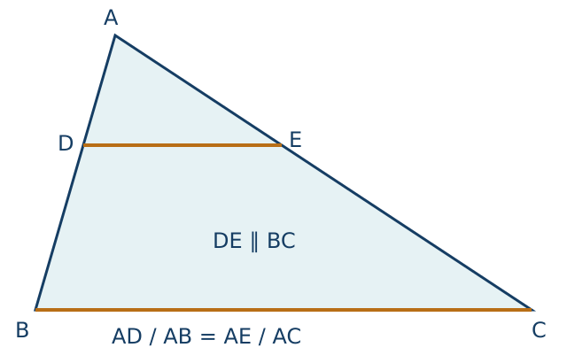
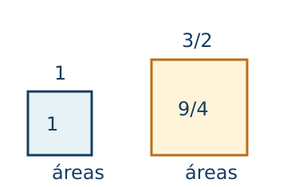
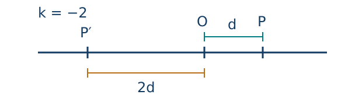
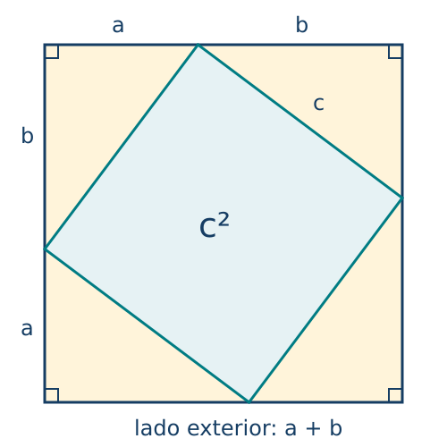

Congruencia, semejanza, Pitágoras y escalas
← Geometría plana: construcciones y argumentos · Índice del libro · Siguiente →
Un carpintero necesita reproducir un refuerzo triangular que encaje en la misma esquina. Medir una base deja libres muchas piezas posibles; añadir otra longitud puede seguir permitiendo que el ángulo entre ambas cambie. Queremos saber qué datos bastan para que la nueva pieza tenga el mismo tamaño y la misma forma. El problema se transforma si lo que necesitamos es dibujar un plano reducido de la pieza: las longitudes cambiarán, pero habrá relaciones que debemos conservar para recuperar sus medidas.
Los movimientos rígidos del capítulo anterior permitirán precisar la primera comparación mediante la congruencia. Para la segunda necesitaremos estudiar figuras semejantes y el factor que relaciona sus longitudes. Seguir ese factor en triángulos rectángulos hará posible comparar alturas inaccesibles, interpretar escalas y justificar relaciones entre lados, entre ellas el teorema de Pitágoras. Empezaremos por examinar los datos de dos piezas y establecer una correspondencia que indique qué vértices y qué lados se están comparando.
Una figura que puede volver a construirse
Podemos ensayar esa distinción con papel. Recortar un triángulo y moverlo sobre la mesa conserva todas sus longitudes. Ampliar su dibujo al doble conserva los ángulos y duplica las longitudes. La primera operación permite superponer las figuras; la segunda exige reconocer una misma forma en tamaños distintos. Estas dos maneras de comparar figuras conducen a la congruencia y a la semejanza.
Trabajaremos en el plano euclidiano del capítulo anterior. Las longitudes serán positivas cuando se refieran a lados de un triángulo, y los triángulos tendrán vértices no alineados. Conservaremos las reglas de superposición por tres lados y por dos lados con el ángulo comprendido. Conviene reconocer esas bases: los argumentos que siguen desarrollan sus consecuencias.
Problema 1. Tres medidas y una correspondencia
Enunciado. Un refuerzo tiene \(AB=5\) cm, \(BC=7\) cm y \(CA=8\) cm. Otro tiene \(DE=7\) cm, \(EF=8\) cm y \(FD=5\) cm. ¿Son congruentes? Escribe la correspondencia entre sus vértices.
Solución. Los dos lados que concurren en \(A\) miden 5 y 8; en el segundo triángulo concurren en \(F\). Por tanto, \(A\) corresponde a \(F\). El lado \(AB\), de 5 cm, corresponde a \(FD\), de modo que \(B\) corresponde a \(D\); queda \(C\) con \(E\). Las tres igualdades quedan ordenadas como \(AB=FD\), \(BC=DE\) y \(CA=EF\). Por el criterio lado–lado–lado, los triángulos son congruentes y podemos escribir \(ABC\cong FDE\). El orden registra qué partes se comparan. La desigualdad \(5+7>8\), junto con las otras dos, confirma que las medidas permiten construir un triángulo.
Dos figuras son congruentes cuando un movimiento rígido, o una composición de ellos, lleva una a la otra. Se permite dar vuelta una pieza, operación representada por una reflexión. Bajo la correspondencia resultante coinciden lados y ángulos. En triángulos, ciertas colecciones pequeñas de datos bastan para asegurar esa superposición. Decimos que constituyen un criterio porque permiten concluir la congruencia antes de comparar todas las medidas.
Problema 2. El ángulo que sujeta dos lados
Enunciado. Dos triángulos tienen sendos lados de 6 y 9 cm y el ángulo comprendido entre ellos mide \(50^\circ\). Justifica su congruencia. Explica por qué importa la palabra «comprendido».
Solución. Colocamos juntos los vértices de esos ángulos y hacemos coincidir una de sus semirrectas. La igualdad angular hace coincidir la otra; las longitudes de 6 y 9 cm sitúan los otros dos vértices sobre esas semirrectas. El criterio lado–ángulo–lado asegura la superposición de los triángulos. El ángulo indicado une precisamente los dos lados medidos. Si se especifica un ángulo situado en otro vértice, ese argumento deja de fijar la abertura entre ellos. Al final del capítulo construiremos dos triángulos distintos con dos lados y un ángulo no comprendido iguales.
Problema 3. Reproducir una base y dos direcciones
Enunciado. En un terreno triangular se ha medido una base de 24 m y sus ángulos adyacentes, de \(48^\circ\) y \(67^\circ\). ¿Determinan esos datos un único tamaño y forma de triángulo?
Solución. Fijada la base, trazamos desde sus extremos, en un mismo semiplano, las semirrectas que forman los ángulos prescritos. Su intersección determina el tercer vértice. La suma \(48^\circ+67^\circ=115^\circ<180^\circ\) permite un tercer ángulo positivo de \(65^\circ\). Cualquier triángulo con esos datos puede colocar su base sobre la primera y hacer coincidir las dos direcciones; resulta congruente con él por ángulo–lado–ángulo. Elegir el otro semiplano produce la figura reflejada, que también es congruente. La unicidad se refiere al tamaño y a la forma, permitiendo movimientos rígidos.
Si conocemos dos ángulos y un lado que no está entre ellos, la suma angular determina el tercero y permite usar el criterio anterior. Tres ángulos, en cambio, dejan libre el tamaño: todos los triángulos equiláteros tienen ángulos de \(60^\circ\), aunque sus lados puedan medir 2 cm o 20 cm.
Problema 4. La mediana de un isósceles
Enunciado. En el triángulo \(ABC\) se cumple \(AB=AC\). El punto \(M\) es el punto medio de \(BC\). Demuestra que \(AM\) es perpendicular a \(BC\) y biseca el ángulo en \(A\).
Solución. Los triángulos \(ABM\) y \(ACM\) tienen \(AB=AC\), \(BM=CM\) y el lado \(AM\) común. Son congruentes por tres lados. Sus ángulos en \(A\) son iguales, así que \(AM\) biseca el ángulo original. También son iguales los ángulos \(BMA\) y \(AMC\). Como \(B,M,C\) están alineados y \(M\) está entre los extremos, estos últimos son adyacentes y suman \(180^\circ\). Cada uno mide \(90^\circ\). La mediana es, por tanto, una altura. La igualdad de los lados fue el dato que permitió reunir esas dos funciones del segmento.
Criterios de congruencia que hemos utilizado
| Propiedad | Fórmula y condiciones de uso |
|---|---|
| Lado–lado–lado | Tres lados correspondientes iguales determinan congruencia; triángulos no degenerados. |
| Lado–ángulo–lado | Dos lados correspondientes y el ángulo comprendido iguales determinan congruencia. |
| Ángulo–lado–ángulo | Un lado y sus dos ángulos adyacentes correspondientes iguales determinan congruencia. |
| Dos ángulos y un lado | Se obtiene el tercer ángulo por la suma de \(180^\circ\) y se reduce al criterio anterior. |
| Isósceles y mediana | Si \(AB=AC\) y \(BM=CM\), la mediana \(AM\) es altura y bisectriz. |
Pruebas. Véase «Congruencia, datos suficientes y simetría del isósceles» en el apéndice; se distinguen las reglas de superposición adoptadas de sus consecuencias.
La proporción que producen las paralelas
Dentro de un triángulo \(ABC\), marquemos \(D\) en el interior de \(AB\) y tracemos por él la paralela a \(BC\). Cortará \(AC\) en un punto interior \(E\). Al acercar la paralela a \(A\), ambas partes del triángulo disminuyen coordinadamente. Podemos probar la proporción sin medir ángulos ni suponer semejanza de antemano.
Denotemos por \([XYZ]\) el área del triángulo \(XYZ\). Para comparar los tramos que corta la paralela, buscaremos triángulos cuyas áreas tengan relaciones fáciles de calcular. Los triángulos \(BDE\) y \(CDE\) comparten la base \(DE\), y sus vértices \(B,C\) están en una paralela a ella: tienen la misma altura y por tanto la misma área.
Comparemos ahora cada uno con \(ADE\). Las bases \(AD,DB\) están sobre una misma recta y la altura desde \(E\) es común, por lo que el cociente de las áreas de \(ADE\) y \(BDE\) es \(AD/DB\). Del mismo modo, las bases \(AE,EC\) dan el cociente \(AE/EC\) entre las áreas de \(ADE\) y \(CDE\). Las dos comparaciones tienen la misma área en el numerador y áreas iguales en el denominador, así que \[\frac{AD}{DB}=\frac{AE}{EC}.\] Sumar una unidad a ambos miembros y tomar los recíprocos da también \(AD/AB=AE/AC\). Hemos obtenido la configuración triangular del teorema de Tales que usaremos: una paralela corta proporcionalmente los dos lados.

Problema 5. Comparar partes con partes
Enunciado. En la configuración anterior, \(AD=4\) cm, \(DB=6\) cm y \(AC=15\) cm. Encuentra \(AE\) y \(EC\).
Solución. El lado completo \(AB\) mide \(4+6=10\) cm. Como \(DE\) es paralelo a \(BC\), \(AE/AC=AD/AB=4/10\). Por tanto, \(AE=15\cdot4/10=6\) cm y \(EC=15-6=9\) cm. Podemos comprobarlo con la otra proporción: \(AD/DB=4/6=2/3\) y \(AE/EC=6/9=2/3\). Usar \(4/6\) como cociente entre una parte y el lado completo habría cambiado las cantidades comparadas.
Problema 6. Reconocer una paralela a partir de razones
Enunciado. Los puntos \(D,E\) son interiores a \(AB,AC\). Se sabe que \(AD=3\), \(DB=2\), \(AE=6\) y \(EC=4\), en centímetros. ¿Podemos asegurar que \(DE\) es paralelo a \(BC\)?
Solución. Las razones son \(AD/DB=3/2\) y \(AE/EC=6/4=3/2\). Para justificar el sentido inverso, tracemos por \(D\) la paralela a \(BC\) y llamemos \(E_0\) a su corte con \(AC\). Tales da \(AE_0/AC=AD/AB=3/5\). Los datos también dan \(AE/AC=6/10=3/5\). Sobre el segmento \(AC\) hay un único punto a esa fracción de su longitud desde \(A\), luego \(E_0=E\). La recta \(DE\) coincide con la paralela construida. Las posiciones interiores y el orden de los puntos forman parte de las hipótesis.
Problema 7. Dividir una longitud sin graduar la regla
Enunciado. Describe una construcción que divida un segmento de 17,5 cm en partes en razón \(3:2\). Calcula las longitudes resultantes.
Solución. Desde un extremo \(A\) trazamos una semirrecta auxiliar distinta de la recta del segmento. Con el compás señalamos cinco tramos iguales consecutivos, hasta un punto \(U_5\). Unimos \(U_5\) con el otro extremo \(B\) y trazamos por \(U_3\) la paralela a \(U_5B\); su intersección con \(AB\) es \(D\). Tales asegura \(AD/AB=AU_3/AU_5=3/5\). Por ello, \(AD=17,5\cdot3/5=10,5\) cm y \(DB=7\) cm. El cociente \(10,5/7=3/2\) comprueba el reparto. El tamaño de los cinco pasos auxiliares puede elegirse libremente; la razón queda fijada por cuántos pasos tomamos.
Propiedades de las secciones paralelas
| Propiedad | Fórmula y condiciones de uso |
|---|---|
| Tales, partes consecutivas | \(AD/DB=AE/EC\) si \(D,E\) son interiores a \(AB,AC\) y \(DE\) es paralelo a \(BC\). |
| Tales, parte y lado completo | Bajo las mismas hipótesis, \(AD/AB=AE/AC\). |
| Recíproco interior | Si \(AD/AB=AE/AC\) y ambos puntos son interiores, entonces \(DE\) es paralelo a \(BC\). |
| División proporcional | Una división en razón \(m:n\), con \(m,n>0\), sitúa el primer tramo a la fracción \(m/(m+n)\) del total. |
Pruebas. Véase «Tales por comparación de áreas y su recíproco» en el apéndice.
Conservar la forma al cambiar el tamaño
Las paralelas permiten separar forma y tamaño. Dos triángulos son semejantes si existe una correspondencia que iguala sus ángulos y hace proporcionales sus lados con una razón común \(k>0\). La razón se lee siempre desde una figura hacia la otra: si \(ABC\sim A'B'C'\), escribimos \[k=\frac{A'B'}{AB}=\frac{B'C'}{BC}=\frac{C'A'}{CA}.\] Volver de la segunda figura a la primera utiliza \(1/k\). Cuando \(k=1\), las figuras son congruentes.
En triángulos basta conocer dos ángulos correspondientes iguales. Para ver por qué, supongamos que el segundo triángulo tiene un lado menor o igual que el correspondiente del primero; podemos intercambiar sus papeles para conseguirlo. Sobre ese lado del primero marcamos la longitud del segundo y trazamos la paralela al lado opuesto. Tales fija la proporción de las dos distancias desde el vértice. El triángulo recortado tiene el lado y los ángulos adyacentes del segundo, por lo que es congruente con él. Quedan iguales los ángulos y proporcionales los lados. En el apéndice se detalla también cómo obtener la razón del tercer lado. Este criterio se llama ángulo–ángulo, o AA.
Problema 8. Una razón para los tres lados
Enunciado. Dos triángulos tienen lados de 6, 8 y 10 cm, y de 9, 12 y 15 cm. Establece si son semejantes y determina la razón del primero al segundo.
Solución. Ordenamos los lados correspondientes de menor a mayor y calculamos \(9/6=12/8=15/10=3/2\). La coincidencia de las tres razones permite usar el criterio de semejanza por tres lados proporcionales. El factor es \(k=3/2\): cada longitud del segundo es una vez y media la del primero. Las medidas verifican las desigualdades triangulares. La prueba del criterio consiste en recortar del mayor, mediante una paralela, un triángulo con las longitudes del menor y aplicar congruencia por tres lados; así también se justifican las igualdades angulares.
Problema 9. Emparejar ángulos antes de dividir
Enunciado. En \(ABC\), los ángulos en \(A,B\) miden \(37^\circ,63^\circ\). En \(DEF\), los ángulos en \(D,E\) miden \(37^\circ,80^\circ\). Si \(AB=8\) cm, \(DF=12\) cm y \(BC=5\) cm, calcula \(FE\).
Solución. El tercer ángulo de \(ABC\) es \(80^\circ\), y el de \(DEF\) es \(63^\circ\). Las parejas son \(A\leftrightarrow D\), \(B\leftrightarrow F\) y \(C\leftrightarrow E\). Por AA, \(ABC\sim DFE\). El lado \(AB\) corresponde a \(DF\), luego la razón del primero al segundo es \(12/8=3/2\). Por ello, \(FE=(3/2)BC=7,5\) cm. La escritura \(ABC\sim DEF\) habría asociado ángulos diferentes y dirigido las razones hacia lados equivocados.
Problema 10. Medir un árbol por su sombra
Enunciado. Una vara vertical de 1,6 m proyecta una sombra de 1,2 m. Al mismo tiempo, un árbol vertical proyecta una sombra de 9 m sobre el mismo terreno horizontal. Suponiendo rayos solares paralelos, estima la altura del árbol.
Solución. Cada altura y su sombra forman los catetos de un triángulo rectángulo. Los rayos paralelos forman con el suelo el mismo ángulo, de modo que los triángulos son semejantes por AA. La correspondencia enfrenta alturas con alturas y sombras con sombras: \(h/1,6=9/1,2\). Se obtiene \(h=12\) m. La relación altura/sombra vale \(4/3\) en ambos casos. El resultado depende del modelo: verticalidad, suelo horizontal, simultaneidad y rayos paralelos. Una sombra medida en una pendiente exigiría revisar esa configuración.
Problema 11. La altura de una copia triangular
Enunciado. Una pieza triangular tiene base 4 cm, altura correspondiente 3 cm y uno de sus otros lados mide 5 cm. Una copia semejante tiene base correspondiente de 12 cm. Encuentra su altura, el lado correspondiente al de 5 cm y su área.
Solución. La razón es \(12/4=3\). Al trazar la altura en cada triángulo, se forman triángulos rectángulos con iguales ángulos correspondientes; por AA, las alturas guardan la misma razón que las bases. La nueva altura mide \(3\cdot3=9\) cm y el lado indicado, \(3\cdot5=15\) cm. El área original es \(4\cdot3/2=6\) cm² y la nueva es \(12\cdot9/2=54\) cm². Multiplicar dos longitudes por 3 multiplicó su producto por 9. Esta observación explica el cambio de área.
Problema 12. Una ampliación que deforma
Enunciado. Se transforma un rectángulo de 4 por 6 cm en otro de 6 por 8 cm. ¿Conservar cuatro ángulos rectos basta para que ambos sean semejantes?
Solución. Las razones entre lados cortos y entre lados largos son \(6/4=3/2\) y \(8/6=4/3\), que difieren. Intercambiar lados tampoco ayuda: \(8/4=2\) y \(6/6=1\). No existe una razón común para todos los lados correspondientes, por lo que los rectángulos no son semejantes. La igualdad de todos los ángulos basta en triángulos gracias a su rigidez; para un cuadrilátero permite todavía variar las proporciones de sus lados. Una ampliación uniforme del primer rectángulo hasta un lado corto de 6 cm habría producido un lado largo de 9 cm.
Criterios de semejanza de triángulos
| Propiedad | Fórmula y condiciones de uso |
|---|---|
| Definición | Ángulos correspondientes iguales y lados correspondientes en una razón común \(k>0\). |
| Ángulo–ángulo | Dos ángulos correspondientes iguales bastan; el tercero se obtiene por la suma angular. |
| Tres lados proporcionales | \(a'/a=b'/b=c'/c=k>0\) determina semejanza. |
| Dos lados y ángulo comprendido | \(a'/a=b'/b=k>0\) y el ángulo comprendido igual determinan semejanza. |
| Razón inversa | La razón de regreso es \(1/k\); con \(k=1\) se obtiene congruencia. |
Pruebas. Véase «Criterios de semejanza a partir de Tales y congruencia» en el apéndice.
Longitudes, superficies y modelos a escala
Un plano a escala \(1:n\), con \(n>0\), representa una longitud real mediante su cociente por \(n\), usando la misma unidad en ambos lados de la comparación. La escala describe una semejanza uniforme. Si una impresora cambia el ancho y el alto por factores distintos, el plano deja de tener una única escala de longitudes.
Problema 13. Del plano a la obra
Enunciado. En un plano a escala \(1:250\), una pared mide 7,2 cm. ¿Cuál será su longitud real en metros?
Solución. Un centímetro del dibujo corresponde a 250 cm reales. La longitud es \(7,2\cdot250=1800\) cm, equivalentes a 18 m. Multiplicamos por 250 antes de convertir centímetros en metros, de modo que cada operación conserva su significado. Comprobamos en sentido inverso: 18 m son 1800 cm y \(1800/250=7,2\) cm de plano.
Problema 14. La escala después de imprimir
Enunciado. Un plano a escala \(1:500\) se imprime al 80 % de sus dimensiones lineales. ¿Cuál es la escala de la copia?
Solución. Un tramo que medía 1 cm en el plano original mide 0,8 cm en la copia y sigue representando 500 cm reales. Por cada centímetro nuevo hay, entonces, \(500/0,8=625\) cm reales: la escala es \(1:625\). Reducir el dibujo aumentó el denominador de la escala. La relación se comprueba con un tramo de 1000 cm reales: antes medía 2 cm y después 1,6 cm, y \(1,6\cdot625=1000\).
Problema 15. El aumento del borde y el de la región
Enunciado. Una figura poligonal de perímetro 30 cm y área 36 cm² se amplía uniformemente con razón \(3/2\). Encuentra el nuevo perímetro y la nueva área.
Solución. Cada lado se multiplica por \(3/2\); sumar los lados multiplica el perímetro por ese mismo número. El nuevo perímetro es 45 cm. Para el área podemos dividir el polígono en triángulos: bases y alturas correspondientes se multiplican por \(3/2\), así que cada área se multiplica por \((3/2)^2=9/4\). La suma de las piezas conserva ese factor y produce \(36\cdot9/4=81\) cm². Los aumentos relativos son distintos: 50 % en longitudes y 125 % en área. Esta última pasa a ser el 225 % de la original.

Para comprender el volumen basta comenzar con una caja rectangular. Su volumen es el producto de largo, ancho y alto, medidos en una misma unidad. Puede obtenerse contando cubos unidad cuando las dimensiones son enteras y por subdivisión cuando son racionales; para longitudes reales adoptamos la extensión continua de esa medida. Multiplicar las tres dimensiones por \(k\) cambia el producto por \(k^3\). La misma conclusión se extiende a cuerpos que se descomponen en piezas con esa ley de escala; el tratamiento general de volúmenes se desarrollará al estudiar los cuerpos geométricos.
Problema 16. De una maqueta a otra
Enunciado. Dos cajas rectangulares semejantes tienen volúmenes de 8 y 27 dm³. La altura de la primera es 2 dm. Determina la razón de semejanza hacia la segunda y su altura.
Solución. Si \(k>0\) es la razón lineal, entonces \(k^3=27/8\). La raíz cúbica positiva da \(k=3/2\). Por tanto, la segunda altura mide \((3/2)\cdot2=3\) dm. Una comprobación posible usa cubos de lados 2 y 3 dm: sus volúmenes son precisamente 8 y 27 dm³. Esa pareja ilustra el resultado; la deducción vale para cualquier par de cajas rectangulares semejantes porque sus tres dimensiones guardan la misma razón.
Factores de cambio de las medidas
| Propiedad | Fórmula y condiciones de uso |
|---|---|
| Longitudes | \(L'=kL\) para una semejanza de razón lineal \(k>0\). |
| Perímetro poligonal | \(P'=kP\), pues todos los lados tienen el mismo factor. |
| Área poligonal | \(A'=k^2A\); se escalan tanto la base como la altura de cada triángulo de una descomposición. |
| Volumen de cajas semejantes | \(V'=k^3V\); las tres dimensiones se multiplican por \(k\). |
| Recuperar la razón | \(k=\sqrt{A'/A}\) para áreas positivas; \(k=\sqrt[3]{V'/V}\) para cajas de volumen positivo. |
| Cambio de impresión | Una escala \(1:n\) impresa con factor lineal \(r>0\) se convierte en \(1:(n/r)\). |
Pruebas. Véase «Escalas de longitudes, áreas y cajas» en el apéndice.
Ampliar desde un centro
Podemos describir una ampliación indicando dónde permanece fija la figura. Elegimos un punto \(O\) y enviamos cada punto \(P\) a otro \(P'\) alineado con él y con \(O\). Si la razón es 2, la distancia al centro se duplica en la misma semirrecta. Si es \(-2\), se duplica en la semirrecta opuesta. Esa transformación es una homotecia de centro \(O\) y razón \(k\ne0\).
El signo describe el lado del centro en que queda la imagen. Las distancias entre imágenes se multiplican por \(\lvert k\rvert\), siempre positivo. En el plano, una razón negativa puede realizarse mediante un giro de \(180^\circ\) alrededor del centro seguido de una ampliación positiva; conviene distinguir ese giro de una reflexión en una recta.
Para calcular con coordenadas necesitamos el desplazamiento desde el centro. Si \(O=(u,v)\) y \(P=(x,y)\), ese desplazamiento es el par \((x-u,y-v)\). Multiplicarlo por \(k\) y regresar al centro da \[P'=\bigl(u+k(x-u),\ v+k(y-v)\bigr).\] La notación vectorial \(\overrightarrow{OP'}=k\overrightarrow{OP}\) expresa la misma operación sobre las dos componentes. Un vector de desplazamiento registra cuánto se avanza horizontal y verticalmente; su longitud geométrica es la del segmento que une origen y extremo. Esta interpretación basta para los cálculos del capítulo.
Problema 17. El signo y el punto de partida
Enunciado. Aplica al punto \(P=(4,2)\) una homotecia de centro \(O=(1,-2)\) y razón \(k=-2\).
Solución. El desplazamiento desde el centro es \(P-O=(3,4)\). Multiplicarlo por \(-2\) produce \((-6,-8)\) y sumarlo a \(O\) da \(P'=(-5,-10)\). Para comprobar la posición, \(P'-O=(-6,-8)=-2(3,4)\): ambas componentes han cambiado de sentido y duplicado su magnitud. Multiplicar directamente las coordenadas de \(P\) habría utilizado el origen \((0,0)\) como centro y resuelto una transformación diferente.

Problema 18. Recuperar el centro
Enunciado. Una homotecia de razón 3 lleva \(P=(2,1)\) a \(P'=(8,7)\). Encuentra su centro.
Solución. La ecuación \(P'=O+3(P-O)\) se simplifica a \(P'=3P-2O\). Por tanto, \(O=(3P-P')/2\). Las componentes dan \(O=((6-8)/2,(3-7)/2)=(-1,-2)\). La comprobación reconstruye el desplazamiento: desde \(O\) hasta \(P\) hay \((3,3)\); al triplicarlo y añadir el centro obtenemos \((-1,-2)+(9,9)=(8,7)\). El despeje es posible porque \(k\ne1\). Con razón 1, cada punto permanece fijo y una pareja \(P=P'\) no determina un centro único.
Problema 19. Dos cambios desde el mismo centro
Enunciado. Con centro en el origen se aplica primero una homotecia de razón \(-2\) y después otra de razón \(1/4\). Encuentra la transformación conjunta de \(P=(2,6)\) y una homotecia que la deshaga.
Solución. La primera imagen es \((-4,-12)\) y la segunda, \((-1,-3)\). Algebraicamente, el desplazamiento final es \((1/4)(-2)P=-P/2\). La composición es la homotecia de razón \(-1/2\). Para volver al punto inicial hay que multiplicar por su recíproco, \(-2\); efectivamente, \(-2(-1,-3)=(2,6)\). Multiplicar razones funciona aquí porque ambas homotecias usan el mismo centro. Cambiar los centros exige conservar también sus términos de desplazamiento.
Problema 20. Lo que sucede con un vector
Enunciado. El desplazamiento de \(A=(1,2)\) a \(B=(4,-2)\) se transforma mediante una homotecia de centro \(O=(2,1)\) y razón \(-2\). Calcula las imágenes y el nuevo desplazamiento.
Solución. Desde \(O\) hasta \(A\) el vector es \((-1,1)\), así que \(A'=(2,1)-2(-1,1)=(4,-1)\). Desde \(O\) hasta \(B\) es \((2,-3)\), de donde \(B'=(-2,7)\). El vector original \(\overrightarrow{AB}=B-A=(3,-4)\) pasa a \(\overrightarrow{A'B'}=B'-A'=(-6,8)=-2\overrightarrow{AB}\). Al restar las fórmulas de las dos imágenes, el centro desaparece. La dirección de la recta de soporte se conserva y el sentido del vector se invierte; la longitud se duplica.
Propiedades de las homotecias
| Propiedad | Fórmula y condiciones de uso |
|---|---|
| Imagen con centro \(O\) | \(P'=O+k(P-O)\), con \(k\ne0\); en coordenadas se opera componente a componente. |
| Posición respecto del centro | \(k>0\) mantiene la semirrecta; \(k<0\) utiliza la opuesta, para \(P\ne O\). El centro queda fijo. |
| Distancias y vectores | \(A'B'=\lvert k\rvert AB\) y \(\overrightarrow{A'B'}=k\overrightarrow{AB}\). |
| Composición con centro común | Las razones se multiplican: \(h_{O,l}\circ h_{O,k}=h_{O,lk}\). |
| Inversa | \(h_{O,k}^{-1}=h_{O,1/k}\); la razón 1 es la identidad. |
| Centro recuperable | Si \(k\ne1\), \(O=(kP-P')/(k-1)\). |
Pruebas. Véase «Homotecias, vectores y razones con signo» en el apéndice. Con \(k=0\) la fórmula colapsa todos los puntos en el centro y queda fuera de las homotecias invertibles.
Un cuadrado que reúne cuatro triángulos
Una diagonal de un rectángulo puede medirse comparando áreas. Tomemos un triángulo rectángulo con catetos \(a,b>0\) e hipotenusa \(c\), el lado opuesto al ángulo recto. Coloquemos cuatro copias, una en cada esquina de un cuadrado de lado \(a+b\), de modo que cada borde quede dividido en un tramo \(a\) y otro \(b\). Las hipotenusas delimitan el cuadrilátero central.
Sus cuatro lados miden \(c\). En cada vértice interior concurren los dos ángulos agudos de las copias y el ángulo del cuadrilátero. Los dos primeros suman \(90^\circ\), porque proceden de un triángulo rectángulo; el ángulo restante mide \(180^\circ-90^\circ=90^\circ\). El cuadrilátero central es, por tanto, un cuadrado de lado \(c\). La figura exterior se descompone sin solapar interiores en ese cuadrado y los cuatro triángulos. La aditividad del área da \[(a+b)^2=c^2+4\frac{ab}{2}.\] Desarrollar el cuadrado del primer miembro y cancelar \(2ab\) deja \[a^2+b^2=c^2.\] Hemos demostrado el teorema de Pitágoras a partir de congruencia, suma angular y área, sin utilizar semejanza ni una fórmula previa de distancia.

Problema 21. Reconstruir la prueba con medidas concretas
Enunciado. Usa cuatro triángulos rectángulos de catetos 3 y 4 cm para justificar que su hipotenusa mide 5 cm. Identifica qué parte del argumento sirve para cualquier par de catetos positivos.
Solución. El cuadrado exterior tiene lado \(3+4=7\) cm y área 49 cm². Cada triángulo tiene área \(3\cdot4/2=6\) cm²; las cuatro piezas ocupan 24 cm². El cuadrado central ocupa \(49-24=25\) cm². Como su lado es la hipotenusa, \(c^2=25\) y, por tratarse de una longitud positiva, \(c=5\) cm. La prueba general conserva exactamente la disposición de las piezas y el argumento angular que hace recto cada vértice central. Sustituir 3 y 4 por \(a,b>0\) da la identidad anterior; una sola comprobación numérica no bastaría para establecerla para todos los triángulos rectángulos.
Problema 22. Una escalera y dos posiciones
Enunciado. Una escalera rígida de 13 m apoya sus extremos en un suelo horizontal y una pared vertical. Su pie está a 5 m de la pared. ¿A qué altura llega? Si el pie se aleja otros 3 m, ¿cuál será la nueva altura?
Solución. Suelo y pared forman el ángulo recto; la escalera es la hipotenusa. La altura inicial \(h>0\) satisface \(h^2+5^2=13^2\), luego \(h^2=144\) y \(h=12\) m. En la segunda posición la distancia horizontal es \(5+3=8\) m. La nueva altura es \(\sqrt{13^2-8^2}=\sqrt{105}\) m, aproximadamente 10,25 m. La longitud exacta comprueba la ecuación: \(105+64=169\). La caída vertical es \(12-\sqrt{105}\) m, aproximadamente 1,75 m; el mismo cambio horizontal no produce un cambio vertical igual.
Problema 23. Comprobar el ángulo recto
Enunciado. ¿Son rectángulos los triángulos de lados 7, 24 y 25 cm, y de lados 7, 24 y 26 cm? Justifica el criterio utilizado.
Solución. Ambos cumplen la desigualdad triangular. En el primero, el lado mayor es 25 y \(7^2+24^2=49+576=625=25^2\). Para justificar el recíproco, construimos un triángulo rectángulo de catetos 7 y 24; el teorema ya probado da hipotenusa 25. Sus tres lados coinciden con los del triángulo propuesto, que es congruente con él y tiene el ángulo recto correspondiente. En el segundo, \(26^2=676\ne625\). Si fuese rectángulo, su hipotenusa tendría que ser el lado mayor, pero incumpliría Pitágoras. Por tanto, no es rectángulo.
Problema 24. Medir sin recorrer los dos desplazamientos
Enunciado. En una cuadrícula cartesiana, cada unidad equivale a un metro. Encuentra la distancia recta entre \(A=(-2,1)\) y \(B=(4,9)\) y compárala con el recorrido horizontal y vertical entre esos puntos.
Solución. El cambio horizontal es \(4-(-2)=6\) m y el vertical es \(9-1=8\) m. Forman los catetos de un triángulo rectángulo cuya hipotenusa es \(AB\). Su longitud es \(\sqrt{6^2+8^2}=\sqrt{100}=10\) m. Recorrer primero horizontal y después verticalmente requiere \(6+8=14\) m. Para puntos generales, las longitudes de los catetos son los valores absolutos de los cambios de coordenada; al elevarlas al cuadrado se obtiene \(AB=\sqrt{(x_B-x_A)^2+(y_B-y_A)^2}\). Si uno de los cambios es cero, la distancia se reduce directamente al valor absoluto del otro; si ambos son cero, los puntos coinciden.
La fórmula de distancia permite precisar la cautela sobre los datos de congruencia. Fijemos \(B=(0,0)\) y \(A=(3,4)\), y tomemos \(C=(2,0)\) o \(C=(4,0)\). En ambos triángulos, \(AB=5\) y \(AC=\sqrt{17}\). El ángulo en \(B\) es el mismo porque las dos posiciones de \(C\) pertenecen a la misma semirrecta horizontal desde \(B\). Sin embargo, \(BC\) mide 2 en el primer caso y 4 en el segundo: los triángulos no son congruentes. Dos lados y un ángulo que no está comprendido entre ellos pueden admitir dos figuras distintas.
Propiedades de los triángulos rectángulos y la distancia
| Propiedad | Fórmula y condiciones de uso |
|---|---|
| Pitágoras | \(a^2+b^2=c^2\) si \(a,b\) son los catetos y \(c\) la hipotenusa de un triángulo rectángulo. |
| Recuperar una longitud | \(c=\sqrt{a^2+b^2}\); \(a=\sqrt{c^2-b^2}\) si \(c>b>0\). Se elige la raíz positiva. |
| Recíproco | Un triángulo con lados positivos \(a,b,c\) y \(c^2=a^2+b^2\) es rectángulo, con ángulo recto opuesto a \(c\). |
| Distancia cartesiana | \(AB=\sqrt{(x_B-x_A)^2+(y_B-y_A)^2}\) en ejes perpendiculares con la misma unidad. |
| Diagonal rectangular | \(d=\sqrt{u^2+v^2}\) para un rectángulo de lados \(u,v>0\). |
Pruebas. Véase «Pitágoras por áreas, recíproco y distancia cartesiana» en el apéndice.
Ejercicios para trabajar sin profesor
Escribe primero la correspondencia o la configuración que autoriza cada cálculo. Conserva las unidades y explica qué dato asegura la congruencia, la semejanza o el ángulo recto.
1. Los lados \(AB,BC,CA\) miden 4, 6 y 7 cm; los lados \(DE,EF,FD\) miden 7, 4 y 6 cm. Decide la congruencia y ordena los vértices correspondientes.
2. Dos piezas triangulares tienen lados correspondientes de 5 y 8 cm y ángulo comprendido de \(72^\circ\). Justifica qué permite afirmar ese dato. ¿Bastaría especificar solo esos lados?
3. Se conoce una base de 18 cm y sus ángulos adyacentes, de \(55^\circ\) y \(70^\circ\). Encuentra el tercer ángulo y justifica la unicidad de forma y tamaño.
4. En un triángulo isósceles \(AB=AC\), la bisectriz interior desde \(A\) corta \(BC\) en \(D\). Demuestra que \(D\) es punto medio y que \(AD\) es perpendicular a \(BC\).
5. En \(ABC\), \(DE\) es paralelo a \(BC\), con \(D,E\) interiores a \(AB,AC\). Si \(AD=5\), \(DB=7\) y \(AC=18\) cm, encuentra \(AE,EC\).
6. En esa configuración interior, \(AD=4\), \(DB=6\), \(AE=6\) y \(EC=10\) cm. Decide si \(DE\) es paralelo a \(BC\) y justifica la respuesta.
7. Divide un segmento de 28 cm en razón \(2:5\) mediante una construcción de paralelas. Calcula sus dos partes.
8. Compara los triángulos de lados 5, 12, 13 cm y 10, 24, 26 cm. Encuentra su razón de semejanza de primero a segundo y de segundo a primero.
9. En \(ABC\) los ángulos en \(A,B\) son \(42^\circ,58^\circ\); en \(DEF\), los de \(D,E\) son \(80^\circ,42^\circ\). Si \(AB=9\), \(EF=12\) y \(BC=15\) cm, encuentra \(FD\).
10. Una vara vertical de 1,5 m tiene sombra de 2 m; un poste vertical tiene sombra simultánea de 6,4 m en el mismo suelo horizontal. Estima la altura del poste y precisa el modelo.
11. Un triángulo de base 6 cm, altura 4 cm y otro lado de 5 cm se copia con base correspondiente de 9 cm. Encuentra su altura, el lado correspondiente al de 5 cm y su área.
12. ¿Son semejantes los rectángulos de 3 por 5 cm y de 6 por 9 cm? ¿Qué segundo lado debería tener la copia si su primer lado mide 6 cm?
13. Un camino mide 8,4 cm en un plano a escala \(1:1250\). Encuentra la longitud real en metros.
14. Un plano \(1:200\) se imprime al 125 % de sus longitudes. Encuentra la escala de la copia.
15. Una figura poligonal de perímetro 42 cm y área 72 cm² se reduce con razón \(2/3\). Encuentra perímetro y área nuevos, y el porcentaje en que disminuye cada uno.
16. Dos cajas rectangulares semejantes tienen volúmenes de 64 y 125 cm³. La primera tiene una arista de 8 cm. Encuentra la razón de semejanza hacia la segunda y la arista correspondiente.
17. Aplica a \(P=(5,2)\) una homotecia de centro \(O=(-1,3)\) y razón \(-1/2\).
18. Una homotecia de razón \(-2\) lleva \(P=(1,4)\) a \(P'=(7,-2)\). Encuentra y comprueba su centro.
19. Con centro en \(O=(1,1)\) se aplican razones 3 y \(-1/2\) sucesivamente al punto \(P=(3,-1)\). Encuentra la imagen final, la razón conjunta y la razón inversa.
20. En una homotecia de centro \(O=(1,0)\) y razón \(3/2\), encuentra las imágenes de \(A=(0,1)\) y \(B=(4,3)\). Comprueba el efecto sobre el vector \(B-A\).
21. Reconstruye la prueba por cuatro triángulos para catetos de 5 y 12 cm. Calcula el área central y la hipotenusa, explicando por qué la región central es cuadrada.
22. Una escalera de 10 m tiene el pie a 6 m de una pared vertical. Calcula su altura. Si se aleja hasta 8 m de la pared, calcula la nueva altura y el descenso.
23. Decide, con prueba, si los triángulos de lados 9, 12, 15 cm y 9, 12, 16 cm son rectángulos.
24. En una cuadrícula de unidad 1 cm, mide la distancia entre \(A=(-3,2)\) y \(B=(5,-4)\). Compárala con el recorrido horizontal y vertical y explica cómo intervienen los signos de las coordenadas.
Soluciones desarrolladas
Ejercicio 1. Registrar las tres parejas
En \(A\) concurren los lados de 4 y 7 cm; en la segunda pieza lo hacen en \(E\). De \(AB=EF=4\) se deduce \(B\leftrightarrow F\) y queda \(C\leftrightarrow D\). Así, \(AB=EF\), \(BC=FD\) y \(CA=DE\), y \(ABC\cong EFD\) por tres lados. Las medidas forman triángulos porque \(4+6>7\) y las otras dos desigualdades también se cumplen. La posición de las piezas sobre el papel puede cambiar sin alterar esa conclusión.
Ejercicio 2. Fijar una abertura
Los dos lados y el ángulo comprendido cumplen lado–ángulo–lado; las piezas son congruentes. Si solo se dan 5 y 8 cm, podemos abrir o cerrar el ángulo entre ellos y cambiar la longitud del tercer lado. Por ejemplo, un ángulo recto y otro de \(72^\circ\) producen triángulos no congruentes: el ángulo comprendido sería distinto bajo la correspondencia fijada. Los dos lados por sí solos dejan una libertad que el ángulo elimina.
Ejercicio 3. Una base con dos direcciones
El tercer ángulo mide \(180^\circ-55^\circ-70^\circ=55^\circ\). Fijada la base de 18 cm y elegido un semiplano, las direcciones desde sus extremos quedan determinadas por los dos ángulos adyacentes. Su intersección fija el vértice restante. Cualquier otra realización es congruente por ángulo–lado–ángulo; escoger el semiplano opuesto da una reflexión congruente. El ángulo positivo restante comprueba la compatibilidad de los datos.
Ejercicio 4. Partir desde la bisectriz
Los triángulos \(ABD\) y \(ACD\) tienen \(AB=AC\), el lado \(AD\) común y los ángulos comprendidos \(BAD,DAC\) iguales por la bisectriz. Por lado–ángulo–lado son congruentes. Se obtiene \(BD=DC\), así que \(D\) es punto medio. Sus ángulos adyacentes en \(D\) son iguales y suman \(180^\circ\), pues \(B,D,C\) están alineados; cada uno es recto. Esto prueba a la vez que la bisectriz es mediana y altura en esta configuración.
Ejercicio 5. El lado completo en el denominador
Tenemos \(AB=5+7=12\) cm. Tales da \(AE/18=5/12\), de donde \(AE=7,5\) cm y \(EC=18-7,5=10,5\) cm. La comprobación con partes consecutivas es \(7,5/10,5=5/7=AD/DB\). Cada cociente ha comparado tramos en posiciones correspondientes; mezclar \(AD/DB\) con \(AE/AC\) habría asociado una parte con un total diferente.
Ejercicio 6. Una condición que falla
Si \(DE\) fuese paralelo a \(BC\), Tales exigiría \(AD/DB=AE/EC\). Sin embargo, \(4/6=2/3\) y \(6/10=3/5\) son distintos: los productos cruzados son 40 y 36. Como ambos puntos son interiores y las longitudes son positivas, se aplica la necesidad de esa proporción. La recta propuesta no es paralela a \(BC\).
Ejercicio 7. Siete pasos auxiliares
Desde el primer extremo del segmento trazamos una semirrecta auxiliar y marcamos siete tramos iguales. Unimos su séptimo punto con el segundo extremo del segmento original. Por el segundo punto auxiliar trazamos la paralela a esa unión. Tales sitúa el corte a la fracción \(2/7\) del segmento: la primera parte es \(28\cdot2/7=8\) cm y la segunda, 20 cm. Su razón \(8/20=2/5\) verifica la construcción.
Ejercicio 8. Cambiar el sentido de la comparación
Las tres razones de lados correspondientes son \(10/5=24/12=26/13=2\). Ambos conjuntos cumplen la desigualdad triangular, así que el criterio de tres lados proporcionales asegura semejanza. Del primero al segundo la razón es 2; en el regreso se invierten los cocientes y se obtiene \(1/2\). El tamaño cambia, mientras que los ángulos correspondientes permanecen iguales.
Ejercicio 9. Encontrar el lado homólogo
El ángulo en \(C\) mide \(80^\circ\) y el de \(F\), \(58^\circ\). Por AA, las parejas son \(A\leftrightarrow E\), \(B\leftrightarrow F\), \(C\leftrightarrow D\), es decir, \(ABC\sim EFD\). Como \(AB\) corresponde a \(EF\), la razón hacia el segundo es \(12/9=4/3\). El lado \(BC\) corresponde a \(FD\), por lo que \(FD=15\cdot4/3=20\) cm. La correspondencia ordenada justifica el cociente empleado.
Ejercicio 10. Dos sombras simultáneas
La verticalidad y el suelo horizontal proporcionan dos ángulos rectos. Suponiendo rayos solares paralelos en el instante de medición, los ángulos con el suelo también son iguales. Por AA, \(h/1,5=6,4/2\). Se obtiene \(h=4,8\) m. En ambos triángulos, altura/sombra es \(3/4\). La inclinación del poste o del suelo, o mediciones tomadas con distinta dirección solar, modificarían el modelo y exigirían otros datos.
Ejercicio 11. Escalar también la altura
La razón es \(9/6=3/2\). Las alturas correspondientes tienen ese mismo factor por la semejanza de los triángulos rectángulos que forman con los lados: la nueva altura mide 6 cm. El lado indicado mide \(5\cdot3/2=7,5\) cm. El área pasa de \(6\cdot4/2=12\) a \(9\cdot6/2=27\) cm², lo que coincide con \(12(3/2)^2\). La altura siempre se toma respecto de la base comparada.
Ejercicio 12. Comprobar las dos dimensiones
Si el lado de 3 cm corresponde al de 6 cm, el factor sería 2, mientras que \(9/5=1,8\). No hay un factor común. La correspondencia intercambiada tampoco funciona, porque \(9/3=3\) y \(6/5=1,2\). Para conservar la forma con primer lado de 6 cm, el segundo debería medir \(2\cdot5=10\) cm. Los cuatro ángulos rectos no fijan la proporción entre largo y ancho.
Ejercicio 13. Conservar la unidad al aplicar la escala
La longitud real es \(8,4\cdot1250=10500\) cm. Al dividir por 100 obtenemos 105 m. Como comprobación, 105 m son 10500 cm y su representación a escala es \(10500/1250=8,4\) cm. El denominador compara centímetros reales con centímetros del plano; la conversión a metros es una operación posterior.
Ejercicio 14. Una ampliación del papel
El factor de impresión es \(r=1,25\). Un centímetro original, que representaba 200 cm reales, se convierte en 1,25 cm de copia. Cada centímetro nuevo representa \(200/1,25=160\) cm: la escala es \(1:160\). Un tramo real de 400 cm pasa de 2 a 2,5 cm dibujados y sigue cumpliendo \(2,5\cdot160=400\) cm.
Ejercicio 15. Dos disminuciones diferentes
El perímetro se multiplica por \(2/3\) y queda en \(42\cdot2/3=28\) cm. El área se multiplica por \(4/9\) y queda en \(72\cdot4/9=32\) cm². El perímetro pierde \(1/3\) de su valor, es decir, \(33\frac13\) %. El área pierde \(1-4/9=5/9\), es decir, \(55\frac59\) %. Los factores positivos y sus unidades distinguen el cambio lineal del superficial.
Ejercicio 16. Recuperar una razón lineal de volúmenes
Para las cajas semejantes, \(k^3=125/64\). Como \(k>0\), \(k=5/4\). La arista correspondiente mide \(8\cdot5/4=10\) cm. La comprobación cúbica es \((5/4)^3=125/64\). No hemos supuesto que las cajas sean cubos: basta que todas sus dimensiones guarden la misma razón y que el volumen sea su producto.
Ejercicio 17. Desplazarse desde el centro correcto
El vector desde \(O\) hasta \(P\) es \((5-(-1),2-3)=(6,-1)\). Multiplicarlo por \(-1/2\) da \((-3,1/2)\); añadir el centro produce \(P'=(-4,7/2)\). Se verifica \(P'-O=(-3,1/2)=-(6,-1)/2\). La imagen queda al otro lado del centro y a la mitad de su distancia, pues la razón es negativa y su valor absoluto es \(1/2\).
Ejercicio 18. Comprobar un centro hallado por despeje
Con \(k=-2\), la ecuación \(P'=O-2(P-O)=3O-2P\) da \(O=(P'+2P)/3\). Se obtiene \(O=((7+2)/3,(-2+8)/3)=(3,2)\). El desplazamiento hasta \(P\) es \((-2,2)\); al multiplicarlo por \(-2\) y regresar al centro resulta \((3,2)+(4,-4)=(7,-2)\). Esto comprueba las dos componentes y el signo.
Ejercicio 19. Componer desde un mismo punto fijo
Desde \(O=(1,1)\) hasta \(P=(3,-1)\) hay \((2,-2)\). La primera razón produce el punto \((1,1)+(6,-6)=(7,-5)\). La segunda actúa sobre su desplazamiento desde el mismo centro: \((1,1)-(6,-6)/2=(-2,4)\). La razón conjunta es \(3(-1/2)=-3/2\) y su inversa, \(-2/3\). Aplicar esta última al desplazamiento final \((-3,3)\) devuelve \((2,-2)\) y, al añadir \(O\), recupera \(P\).
Ejercicio 20. Restar elimina el centro
Para \(A\), el desplazamiento desde \(O\) es \((-1,1)\) y su imagen es \(A'=(-1/2,3/2)\). Para \(B\), el desplazamiento es \((3,3)\) y resulta \(B'=(11/2,9/2)\). Por tanto, \(B'-A'=(6,3)\). El vector original es \(B-A=(4,2)\) y \((3/2)(4,2)=(6,3)\), como exige la homotecia. La coincidencia comprueba las imágenes sin confundir el centro con el origen de coordenadas.
Ejercicio 21. El área que queda entre las cuatro copias
El cuadrado exterior tiene lado \(5+12=17\) cm y área 289 cm². Los cuatro triángulos ocupan \(4(5\cdot12/2)=120\) cm². La región central tiene área 169 cm². Sus cuatro lados son hipotenusas de copias congruentes; cada ángulo interior completa hasta \(180^\circ\) dos ángulos agudos cuya suma es \(90^\circ\). Tiene, por tanto, cuatro ángulos rectos y es un cuadrado. Su lado positivo es \(\sqrt{169}=13\) cm. Tanto la justificación angular como la descomposición son necesarias para interpretar la resta de áreas.
Ejercicio 22. Dos triángulos con la misma hipotenusa
Inicialmente la altura positiva es \(\sqrt{10^2-6^2}=\sqrt{64}=8\) m. Después, la distancia horizontal es 8 m y la altura es \(\sqrt{100-64}=6\) m. El descenso es \(8-6=2\) m. Las ecuaciones \(6^2+8^2=100\) y \(8^2+6^2=100\) comprueban ambas posiciones; el ángulo recto procede de la perpendicularidad entre suelo y pared.
Ejercicio 23. Usar cada sentido de la afirmación
Para el primer triángulo, \(9^2+12^2=81+144=225=15^2\). Construimos uno rectángulo de catetos 9 y 12; Pitágoras da hipotenusa 15 y la congruencia por tres lados transfiere su ángulo recto al triángulo propuesto. Para el segundo, el lado mayor es 16 y \(16^2=256\ne225\); si fuese rectángulo, incumpliría el teorema. No lo es. Ambos conjuntos satisfacen las desigualdades triangulares, de modo que estamos comparando triángulos existentes.
Ejercicio 24. Restar coordenadas antes de medir
Los desplazamientos son \(5-(-3)=8\) cm y \(-4-2=-6\) cm. El signo negativo del segundo indica descenso; su longitud es 6 cm. La distancia recta vale \(\sqrt{8^2+(-6)^2}=\sqrt{100}=10\) cm. El recorrido por los dos ejes mide \(|8|+|-6|=14\) cm. Los cuadrados de la fórmula eliminan los signos porque operan sobre longitudes de catetos; sumar directamente \(8+(-6)\) calcularía un número distinto de la longitud de ese recorrido.
Diagnóstico de salida
Una comparación geométrica comienza por elegir qué corresponde con qué. Los criterios de congruencia fijan una figura hasta movimientos rígidos; Tales y la semejanza permiten transportar razones; la escala exige conservar unidades y aplicar la potencia adecuada a cada medida. La homotecia añade un centro y un signo a ese cambio de tamaño. Pitágoras relaciona longitudes cuando hay un ángulo recto, y su recíproco permite justificarlo desde medidas. Para decidir qué herramienta utilizar, la tarea esencial es reconocer qué datos autorizan cada paso.
← Geometría plana: construcciones y argumentos · Índice del libro · Siguiente →